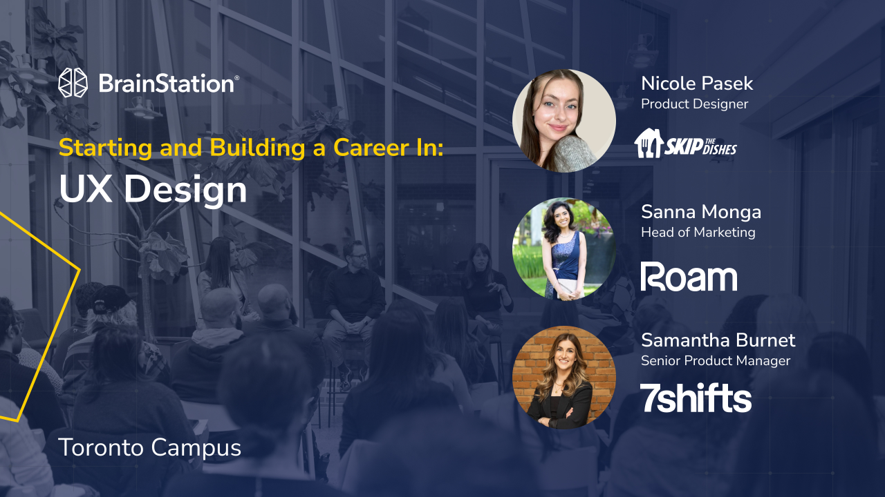

Community · Ongoing
Speaking & Mentorship

Overview
Bringing real industry experience into classrooms and communities.
Good design work doesn't end at the product. One of the things I care about most is making the path into product design feel less opaque — for students figuring out how to present their work, for early-career designers trying to understand what the job actually looks like, and for anyone navigating a field that's changing faster than most curricula can keep up with.
I've spoken at universities and industry events to share what I've learned, have honest conversations about where the profession is heading, and give people the kind of practical, unfiltered perspective that's hard to find outside of a real job.
University of Waterloo
Guest lecture for the Global Business and Digital Arts program.
I returned to speak at the University of Waterloo's Stratford School to a product design class within the Global Business and Digital Arts program. The session covered three areas I find most useful to talk through honestly with students who are about to enter the job market.
Portfolio craft
Practical techniques for presenting design work in a way that communicates thinking — not just output.
AI in practice
How AI tools are actually being used inside product design teams right now, and what that means for how students should be thinking about their work.
Industry realities
An honest conversation about uncertainty in the field — the fears designers have, and why empathy and adaptability are the most durable skills anyone can bring into a co-op or first role.
The students were remarkably talented. Watching the level of craft and design thinking in the room was the kind of thing that makes you want to come back.


BrainStation
Interactive panel at BrainStation Toronto.
I was invited to speak on an interactive panel at BrainStation's Toronto campus — a session aimed at early-career designers and people making their way into the field. Panels like this are one of the best formats for honest conversation: the audience can ask what they actually want to know, and speakers can give real answers rather than rehearsed ones.
I talked through my experience in product design, what I wish I'd known earlier, and how to make the most of the networks and opportunities that exist for people starting out. The energy in the room was exactly what makes these sessions worth doing.

Mentorship
One-on-one mentoring for junior designers breaking into the industry.
On an ongoing basis, I meet virtually with students and young professionals who are figuring out how to start their careers in product design. These conversations are one-on-one — focused on wherever someone is actually stuck, whether that's how to position their work, how to build a portfolio that gets them interviews, or just how to make sense of an industry that can feel impossible to read from the outside.
The topics vary depending on where someone is in their journey, but the through-line is always the same: practical, honest guidance from someone who has been through the job market recently enough to know what actually matters. That increasingly includes conversations about AI — what's changing in the industry, how to think about it without panic, and how junior designers can start incorporating it into their practice in ways that actually strengthen their work rather than replace the thinking behind it.
"Nicole is an incredibly supportive and insightful mentor. She guided me in improving my resume and UI/UX design portfolio with thoughtful and practical feedback. Her advice was motivating and encouraging, and I truly appreciate the time she dedicated to guiding me through my early stages in my career as UI/UX Designer."
— Manal Khan